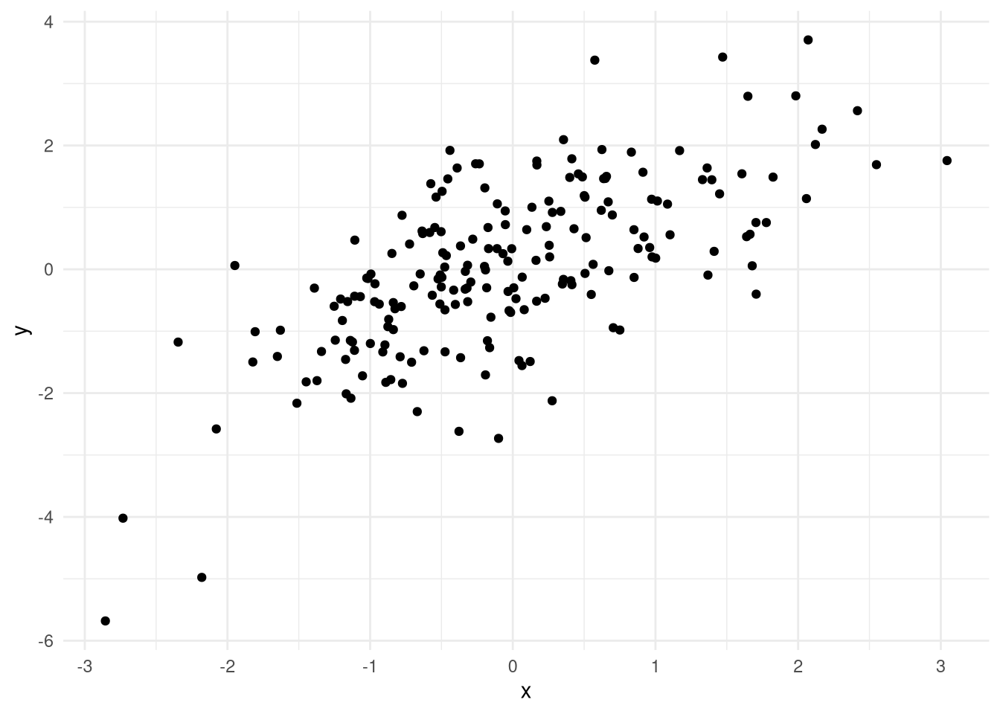
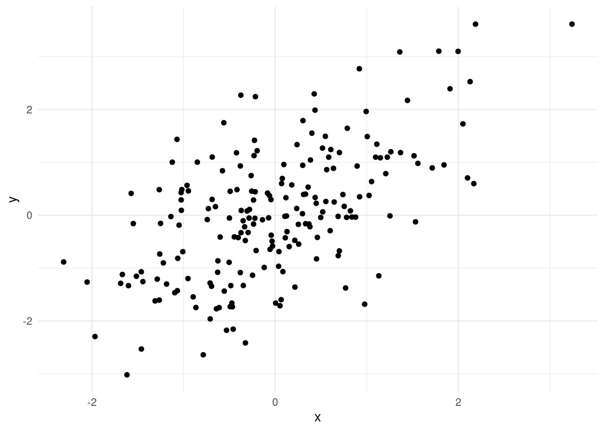
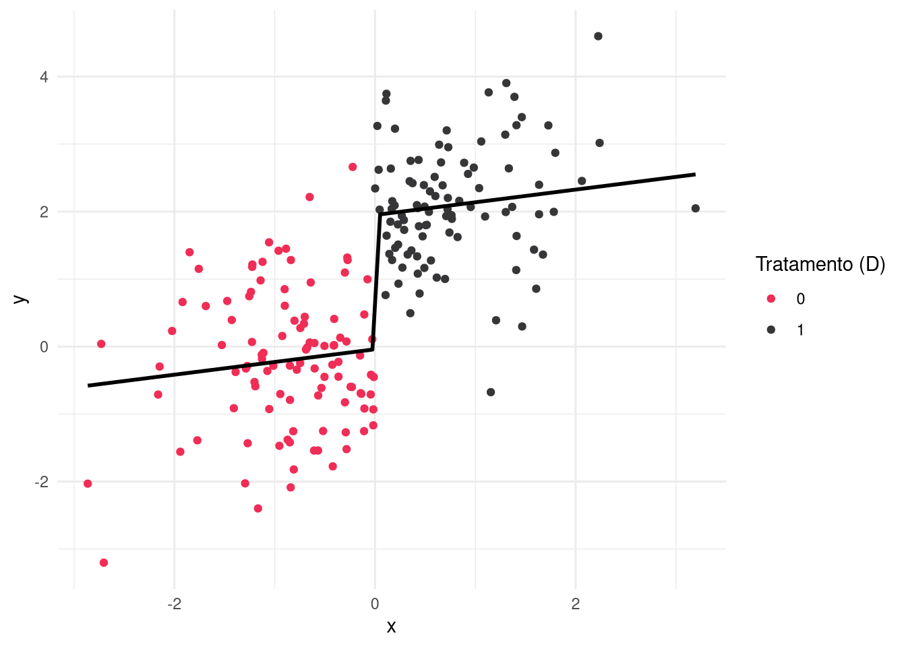
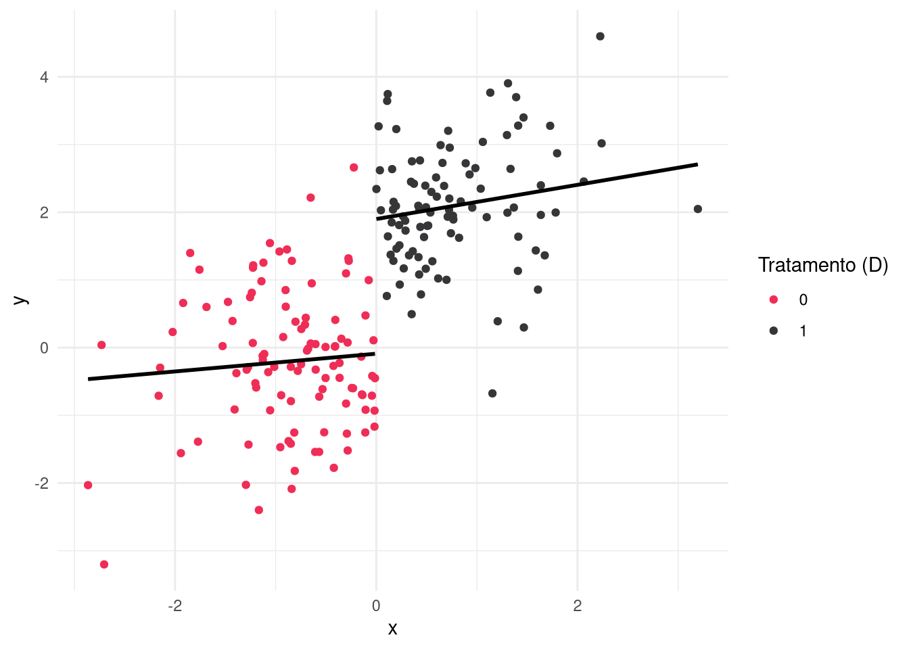
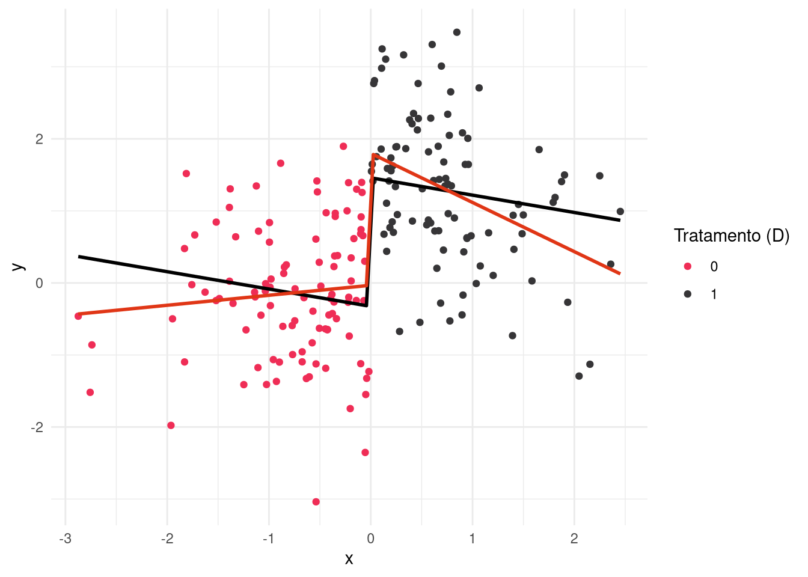
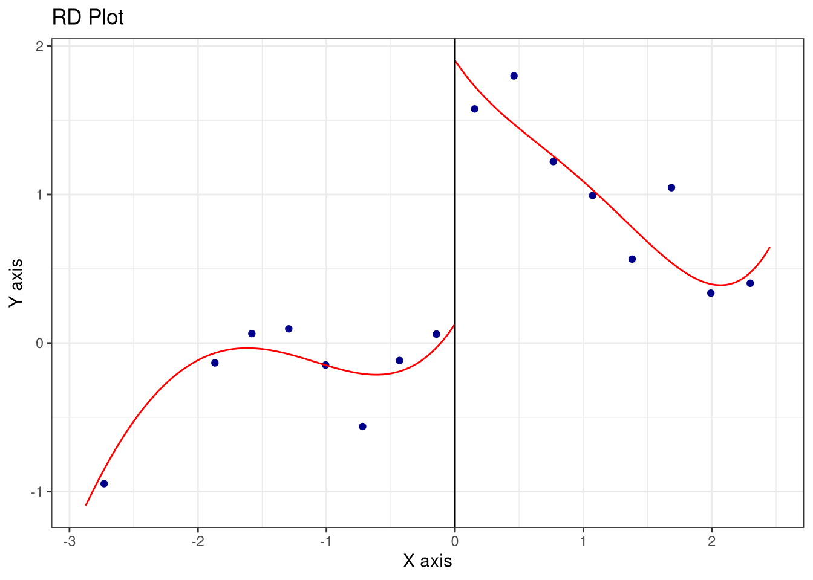

load("lee.rda")Regressão descontínua
Introdução
Estas notas cobrem como estimar efeitos causais locais usando estratégias de regressão descontínua. Como o nome canônico da estratégia sugere, usaremos modelos de regressão para isso, mas também veremos como usar o pacote rdrobust que implementa um estimador mais adequado, que dá mais peso para observações próximas à descontinuidade; seleciona uma janela ótima para estimação; e usa polinômios. Para praticar, usaremos dados simulados e, também, a base de dados de Lee (2008), disponíveis aqui e que podem ser carregados com:
Também precisaremos instalar o pacote rdrobust:
install.packages("rdrobust")E carregar pacotes necessários:
library(tidyverse)
library(rdrobust)
library(fixest)Regressão global
Comumente, RDD é descrita como a diferença vertical, em unidades de \(Y\), entre duas curvas (ou regressão) estimadas de cada lado de uma descontinuidade que atribui algum tratamento quando \(X \geq c\) (ver Skovron e Titiunik 2015). Na prática, isso significa estimar um modelo de regressão linear por mínimos quadrados que permita que a reta da relação entre \(Y\) e \(X\) varie em cada lado de \(c\).
Para exemplificar a ideia, podemos simular um PGD no qual temos uma variável \(X \sim Normal(0, 1)\) (i.e., média zero, desvio de 1) e que gere \(Y_i\) como \(Y_i \sim X_i*0.8 + \epsilon_i\), em que \(\epsilon_i \sim Normal(0, 1)\) é um erro aleatório. O código para simular sorteios desse processo e plotar os resultados é:
# Isso serve para replicarmos o sorteio
set.seed(1234)
# Simula os dados
n <- 200
dados <- tibble(x = rnorm(n, 0, 1)) %>%
mutate(y = x*0.8 + rnorm(n, 0, 1))
# Plota
dados %>%
ggplot(aes(x = x, y = y)) +
geom_point() +
theme_minimal()
Como dá para ver, temos uma relação bivariada positiva, no sentido de que \(Y_i | X_i\), isto é, a média condicional de \(Y_i\) depende de valores de \(X_i\). Com isso, estamos a um passo de entender um PGD comum em descontinuidades: a única diferença é que temos também um tratamento, \(D_i \in \{1, 0\}\), que é recebido apenas por unidades \(_i\) que tiverem valores de \(X_i\) maiores do que um ponto de corte qualquer, \(c\). Se \(c=0\), por exemplo, \(D_{i:X_i > c} = 1\).
Podemos atualizar nosso PGD com essa nova variável, assumindo que o tratamento causa um aumento de \(2\) pontos em \(Y_i\), isto é, \(Y_i \sim X_i*0.8 + 2 * (X_i > c) + \epsilon_i\):
# Simula os dados
dados <- tibble(x = rnorm(n, 0, 1)) %>%
mutate(d = as.numeric(x > 0)) %>%
mutate(y = x*0.2 + 2*d + rnorm(n, 0, 1))
# Plota
dados %>%
ggplot(aes(x = x, y = y, color = as.factor(d))) +
geom_point() +
theme_minimal() +
scale_color_manual(values = c("#EF2D56", "#363537")) +
labs(color = "Tratamento (D)")
Entendendo como simular um PGD que atribui um tratamento descontinuamente1, podemos passar para a estimação do efeito que estipulamos, \(\hat{\tau} = 2\).
Um modelo linear rígido
Uma primeira tentativa de estimar o efeito local no nosso exemplo anterior é rodar uma regressão incluindo a variável de tratamento, \(D_i\), e \(X_i\). O código para isso é:
# Estima o modelo
modelo <- lm(y ~ x + d, data = dados)
summary(modelo)
Call:
lm(formula = y ~ x + d, data = dados)
Residuals:
Min 1Q Median 3Q Max
-2.84240 -0.59628 -0.05208 0.59661 2.74348
Coefficients:
Estimate Std. Error t value Pr(>|t|)
(Intercept) -0.04034 0.13421 -0.301 0.7641
x 0.18820 0.11062 1.701 0.0905 .
d 1.98969 0.22665 8.779 7.94e-16 ***
---
Signif. codes: 0 '***' 0.001 '**' 0.01 '*' 0.05 '.' 0.1 ' ' 1
Residual standard error: 0.9559 on 197 degrees of freedom
Multiple R-squared: 0.5969, Adjusted R-squared: 0.5928
F-statistic: 145.8 on 2 and 197 DF, p-value: < 2.2e-16A estimativa de \(\hat{\tau}\) é bem próxima, mas vale investigarmos visualmente o que esse modelo estimou:
# Plota
dados %>%
ggplot(aes(x = x, y = y, color = as.factor(d))) +
geom_point() +
geom_smooth(method = "lm", se = F, formula = y ~ x + (x > 0), color = "black") +
theme_minimal() +
scale_color_manual(values = c("#EF2D56", "#363537")) +
labs(color = "Tratamento (D)") 
Pelo gráfico, talvez dê para perceber o seguinte: a inclinação da reta (o slope), ou o coeficiente de x, é o mesmo dos dois lados da descontinuidade. Como \(\hat{\beta_0}\) indica a média de \(Y_i\) quando \(X_i=0\), essa é valor estimado de \(Y_i\) quando \(lim_{X_i \uparrow c}\); por outro lado, o efeito estimado de \(D_i\) (\(\hat{beta_2}\)) indica o efeito médio local, que é o quanto a reta sobe (ou desce) quando \(X_i\) passa de \(c\) para \(c+1\) – a nossa estimativa de \(lim_{X_i \downarrow c}\) é \(\hat{\beta_0} + \hat{beta_2}\) e, portanto,
\[ \hat{\tau}_{RDD} = \hat{\beta_0} + \hat{\beta_2} - \hat{\beta_0} = \hat{\beta_2} \]
Um modelo flexível
No mais das vezes, não podemos assumir que a relação entre \(Y | X\) é a mesma dos dois lados da descontinuidade. Para lidar com isso, podemos estimar um modelo flexível, que permita que a reta de regressão varie em cada lado de \(c\), incluindo um termo multiplicativo adicional:
\[ Y_i = \beta_0 + \beta_1 X_i + \beta_2 D_i + \beta_3 X_i D_i + \epsilon_i \]
Incluindo o coeficiente \(\beta_3\), estamos permitindo que a inclinação da reta varie em cada lado de \(c\). O código para estimar esse novo modelo é:
# Estima o modelo
modelo <- lm(y ~ x + d + x*d, data = dados)
summary(modelo)
Call:
lm(formula = y ~ x + d + x * d, data = dados)
Residuals:
Min 1Q Median 3Q Max
-2.8668 -0.5901 -0.0351 0.5786 2.7803
Coefficients:
Estimate Std. Error t value Pr(>|t|)
(Intercept) -0.08991 0.16212 -0.555 0.580
x 0.13111 0.15220 0.861 0.390
d 1.98931 0.22705 8.762 9.1e-16 ***
x:d 0.12149 0.22205 0.547 0.585
---
Signif. codes: 0 '***' 0.001 '**' 0.01 '*' 0.05 '.' 0.1 ' ' 1
Residual standard error: 0.9576 on 196 degrees of freedom
Multiple R-squared: 0.5975, Adjusted R-squared: 0.5913
F-statistic: 96.98 on 3 and 196 DF, p-value: < 2.2e-16O novo gráfico:
# Plotando os dados
dados %>%
ggplot(aes(x = x, y = y, color = as.factor(d), group = d)) +
geom_point() +
geom_smooth(method = "lm", se = F, formula = y ~ x, color = "black") +
theme_minimal() +
scale_color_manual(values = c("#EF2D56", "#363537")) +
labs(color = "Tratamento (D)") 
A diferença entre retas é pouco perceptível nesse exemplo, mas considere o seguinte:
# Simula os dados
dados <- tibble(x = rnorm(n, 0, 1)) %>%
mutate(d = as.numeric(x > 0)) %>%
mutate(y = x*0.2 + 2*d + -1*x*d + rnorm(n, 0, 1))
# Estima o modelo
rigido <- feols(y ~ x + d, data = dados)
flexivel <- feols(y ~ x + d + x*d, data = dados)
etable(rigido, flexivel, digits = 3) rigido flexivel
Dependent Var.: y y
Constant -0.326* (0.131) -0.032 (0.149)
x -0.241* (0.114) 0.139 (0.151)
d 1.78*** (0.224) 1.83*** (0.217)
x x d -0.821*** (0.222)
_______________ _______________ _________________
S.E. type IID IID
Observations 200 200
R2 0.35572 0.39776
Adj. R2 0.34918 0.38854
---
Signif. codes: 0 '***' 0.001 '**' 0.01 '*' 0.05 '.' 0.1 ' ' 1A diferença é ínfima, mas, visualmente, é perceptível:
# Plota os dados
dados %>%
ggplot(aes(x = x, y = y, color = as.factor(d))) +
geom_point() +
geom_smooth(method = "lm", se = F, formula = y ~ x + (x > 0), color = "black") +
geom_smooth(method = "lm", se = F, formula = y ~ x + (x > 0) + x*(x > 0), color = "#E03616") +
theme_minimal() +
scale_color_manual(values = c("#EF2D56", "#363537")) +
labs(color = "Tratamento (D)") 
Regressão local
O estimador mais adequado e comum para RDD é o que usa apenas observações próximas da descontinuidade, isto é, que usa apenas observações em uma janela em torno de \(c\). O quão próximas as observações precisam ser? Digamos que, no nosso exemplo, uma janela \(c=0.2\) seja adequada. O código para estimar esse modelo é:
# Estima o modelo
dados_janela <- dados %>%
filter(abs(x) < 0.2)
local <- feols(y ~ x + d + x*d, data = dados_janela)
# Resultados
etable(rigido, flexivel, local, digits = 3) rigido flexivel local
Dependent Var.: y y y
Constant -0.326* (0.131) -0.032 (0.149) -0.945. (0.491)
x -0.241* (0.114) 0.139 (0.151) -9.76* (4.48)
d 1.78*** (0.224) 1.83*** (0.217) 3.16*** (0.653)
x x d -0.821*** (0.222) 6.00 (5.59)
_______________ _______________ _________________ _______________
S.E. type IID IID IID
Observations 200 200 36
R2 0.35572 0.39776 0.55115
Adj. R2 0.34918 0.38854 0.50907
---
Signif. codes: 0 '***' 0.001 '**' 0.01 '*' 0.05 '.' 0.1 ' ' 1O resultado do modelo flexível é nitidamente enviesado. Como?
Janela
Como dá para perceber, a escolha da janela tem consequências e, no mais das vezes, pesquisas aplicadas testam vários deles (justamente porque seu uso incorreto pode gerar viés, como no caso anterior). Se plotarmos os dados anteriores, veremos que, nesse caso, o viés decorre da falta de observações:
# Plota os dados
dados_janela %>%
ggplot(aes(x = x, y = y, color = as.factor(d), group = d)) +
geom_point() +
geom_smooth(method = "lm", se = F, formula = y ~ x, color = "black") +
theme_minimal() +
scale_color_manual(values = c("#EF2D56", "#363537")) +
labs(color = "Tratamento (D)") 
Um exercício é usar diferentes intervalos:
# Estima o modelo
mod1 <- feols(y ~ x + d + x*d, data = dados %>% filter(abs(x) < 1))
mod2 <- feols(y ~ x + d + x*d, data = dados %>% filter(abs(x) < 0.75))
mod3 <- feols(y ~ x + d + x*d, data = dados %>% filter(abs(x) < 0.5))
mod4 <- feols(y ~ x + d + x*d, data = dados %>% filter(abs(x) < 0.2))
# Resultados
etable(mod1, mod2, mod3, mod4, digits = 3) mod1 mod2 mod3 mod4
Dependent Var.: y y y y
Constant 0.017 (0.207) 0.170 (0.244) -0.030 (0.290) -0.945. (0.491)
x 0.342 (0.382) 0.901 (0.619) -0.143 (1.05) -9.76* (4.48)
d 1.82*** (0.300) 1.67*** (0.346) 1.84*** (0.419) 3.16*** (0.653)
x x d -1.07* (0.537) -1.67* (0.837) -0.439 (1.55) 6.00 (5.59)
_______________ _______________ _______________ _______________ _______________
S.E. type IID IID IID IID
Observations 147 113 78 36
R2 0.43081 0.45398 0.44327 0.55115
Adj. R2 0.41887 0.43896 0.42070 0.50907
---
Signif. codes: 0 '***' 0.001 '**' 0.01 '*' 0.05 '.' 0.1 ' ' 1rdrobust
Na prática, acertar escolha de janela, especificação, entre outros detalhes, não é algo simples. Por essa razão, o padrão corrente na literatura é usar o estimador proposto por Calonico, Cattaneo, e Titiunik (2015), disponível no pacote rdrobust, que usa um algoritmo para selecionar janela automaticamente (balanceando viés e precisão); corrige erros-padrão; e permite usar polinômios para flexibilizar a relação entre \(Y\) e \(X\).2 Podemos aplicá-lo nos dados que geramos (lembrando, \(\tau=2\)):
# Estima o modelo
resultados <- rdrobust(dados$y, dados$x)
summary(resultados)Sharp RD estimates using local polynomial regression.
Number of Obs. 200
BW type mserd
Kernel Triangular
VCE method NN
Number of Obs. 103 97
Eff. Number of Obs. 56 51
Order est. (p) 1 1
Order bias (q) 2 2
BW est. (h) 0.702 0.702
BW bias (b) 1.132 1.132
rho (h/b) 0.620 0.620
Unique Obs. 103 97
=============================================================================
Method Coef. Std. Err. z P>|z| [ 95% C.I. ]
=============================================================================
Conventional 1.924 0.335 5.746 0.000 [1.268 , 2.580]
Robust - - 5.097 0.000 [1.237 , 2.781]
=============================================================================E produzir um gráfico com uma única linha de código:
rdplot(dados$y, dados$x)
Com os dados de Lee (2008), estimamos o efeito local também usando:
# Aplica o estimador
resultados <- rdrobust(Lee2008$y, Lee2008$x)Warning in rdrobust(Lee2008$y, Lee2008$x): Mass points detected in the running
variable.summary(resultados)Sharp RD estimates using local polynomial regression.
Number of Obs. 6558
BW type mserd
Kernel Triangular
VCE method NN
Number of Obs. 2740 3818
Eff. Number of Obs. 789 817
Order est. (p) 1 1
Order bias (q) 2 2
BW est. (h) 0.136 0.136
BW bias (b) 0.240 0.240
rho (h/b) 0.565 0.565
Unique Obs. 2108 2581
=============================================================================
Method Coef. Std. Err. z P>|z| [ 95% C.I. ]
=============================================================================
Conventional 0.064 0.011 5.815 0.000 [0.042 , 0.085]
Robust - - 4.738 0.000 [0.035 , 0.084]
=============================================================================Referências
Calonico, Sebastian, Matias D Cattaneo, e Rocio Titiunik. 2015. «Rdrobust: an R package for robust nonparametric inference in regression-discontinuity designs.» R J. 7 (1): 38.
Lee, David S. 2008. «Randomized experiments from non-random selection in US House elections». Journal of Econometrics 142 (2): 675–97.
Skovron, Christopher, e Rocıo Titiunik. 2015. «A practical guide to regression discontinuity designs in political science». American Journal of Political Science 2015: 1–36.
Notas de rodapé
Há outras formas de simular um RDD, e em PGDs do mundo real não há garantias de que a relação entre \(X\) e \(Y\) é não-linear, ou que o efeito do tratamento, \(D\), não varie com \(X\), isto é, \(D | X\).↩︎
O estimador é mais complexo do que isso e, na realidade, faz outras coisas, como aplicar pesos diferentes a determinadas observações, o que é chamado de kernel.↩︎